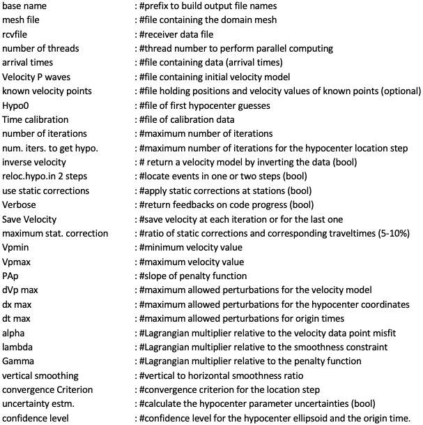
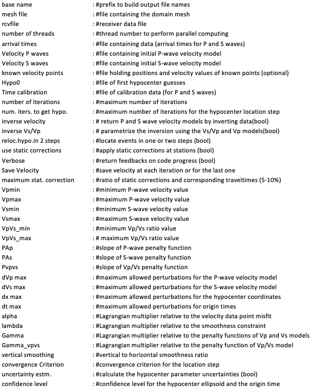
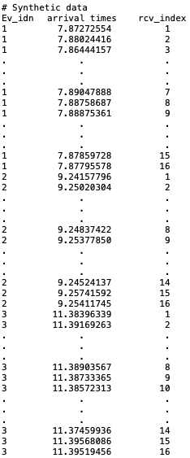
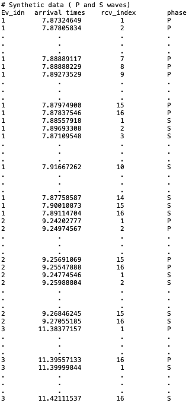
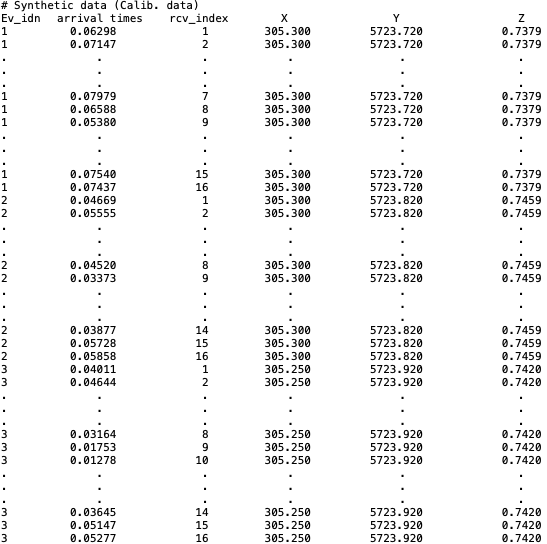
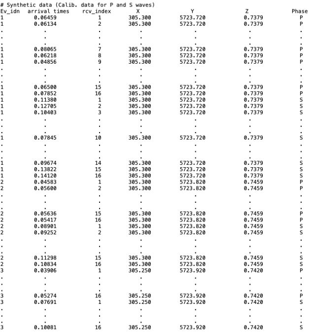
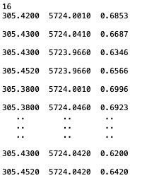
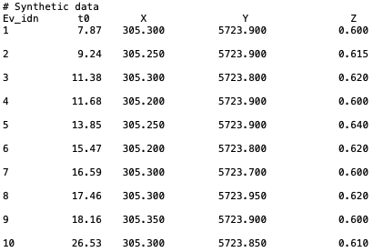

Example
JHVIT can automatically read the inversion parameters and data from text files.
We recommend to use this feature in order to store this information for future verifications or reuse.
We present in this section the templates to prepare such files.
Parameter File
Users are invited to prepare parameter files and pass them as arguments to the proper JHVIT function. Contents of these files depends of the number of seismic phases to be used since more data and parameters are obviously required when inverting simultaneously P- and S-wave data. We give in the figures below two examples of these parameter files in the case of single-phase inversion (generally P-wave) and in the case of P- and S-wave data inversion. Users may use these templates to prepare their own parameter files by replacing text following the sharp symbol (#) by the proper values (remove the symbol # also).
{kind=link}
Parameter file template for P-wave data inversion.
{kind=link}
Parameter file template for P- and S-wave data inversion.
Domain discretization
JHVIT can automatically read domain meshes from separate files. At the moment, only mesh files generated using
Gmsh can be recognized. To prepare such files, one must start by creating a geo file (describing the domain geometry)
and pass it to Gmsh. For a simple 3D domain showing only topographic irregularities, users may utilize this python script:
https://github.com/groupeLIAMG/JHVIT/blob/main/src/Mesh_Prep.py.
Note that MSH files created by Gmsh may vary depending on the considered version.
Version 2. is the reference one compatible with JHVIT. The corresponding MSH file format must be similar to this example:
https://github.com/groupeLIAMG/JHVIT/blob/main/examples/Model.msh
Data files
Input data should be organized in text files as shown in the figures below. For single phase inversion, these files should contain 3 columns abbreviated as following: Ev_idn (event indices), arrival times (arrival times) and rcv_index (corresponding receiver indices). In the case of P and S wave data inversion, a fourth column is added to specify the seismic phase (called Phase). Users are invited to use the same column labels to store their data in order to avoid bugs. The first lines are dedicated to insert optional comments and notes.
{kind=link}
Data file template for P-wave inversion.
{kind=link}
Data file template for P- and S-wave inversion. We suppose herein a dataset with 3 seismic events recorded in 16 receivers each one.
Data calibration files
The available calibration data can be stored in specific files following predefined structure. In the case of single-phase inversion, data must be organized in 5 columns: the 1st column corresponds to shot indices (Ev_idn), the 2nd column for traveltime values (labeled arrival times), the 3rd column gives corresponding receiver (rcv_index). The last three columns (X, Y and Z) must contain positions of calibration shots. A sixth column would be added if both P and S waves are inverted in order to specify seismic phase of each calibration shot.
{kind=link}
Template of calibration data file for P-wave inversion.
{kind=link}
Template of calibration data file for P- and S-wave inversion.
Receiver files
Users can prepare their receiver files as following: In the first line they must specify the number of receivers to be used followed by the coordinates X, Y and Z of each one written at the rate of on receiver per line.
{kind=link}
Example of a receiver file. Receiver coordinates are given in the MTM system.
Initial velocity values and hypocenter positions
Initial estimates for velocity models and hypocenter coordinates may be stored in text files that can be indicated in the parameter files. A a simple homogeneous model is usually sufficient. The initial velocity file contains in this case a single value corresponding to the chosen velocity. Users are referred to Nasr et al. (2021) to properly select a velocity value that facilitates code convergence. If a complex model has to be set, the velocity values must to be sorted according to the node indices. The first hypocenter estimates can be stored in a five-column text file. These columns are labeled: Ev_idn (hypocenter indices), t0 (origin times), X, Y and Z (spatial coordinates). Note that the initial positions of hypocenters should be all different to avoid a singular Jacobian matrix.
{kind=link}
Example of initial hypocenter file.